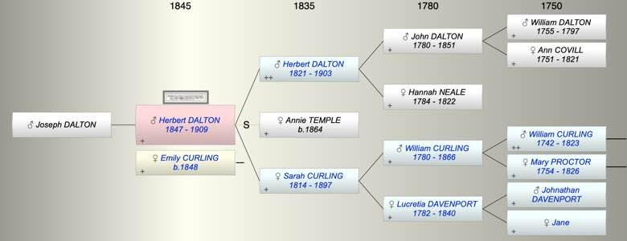

| [Index] |
| Herbert William DALTON (1847 - 1909) |
|  |
| b. 17 Jun 1847 at Lambeth |
| +. Emily Sarah CURLING (1848 - ) |
| d. 25 Aug 1909 aged 62 |
| Parents: |
| Herbert DALTON (1821 - 1903) |
| Sarah CURLING (1814 - 1897) |
| Children (1): |
| Joseph DALTON |
| Events in Herbert William DALTON (1847 - 1909)'s life | |||||
| Date | Age | Event | Place | Notes | Src |
| 17 Jun 1847 | Herbert William DALTON was born | Lambeth | Note 1 | ||
| 1897 | 50 | Death of mother Sarah CURLING (aged 83) | Tunbridge Wells | Note 2 | |
| 06 Dec 1903 | 56 | Death of father Herbert DALTON (aged 82) | Tunbridge Wells | Note 3 | |
| 25 Aug 1909 | 62 | Herbert William DALTON died | Note 4 | ||
| Personal Notes: |
|
Freedon of City 18 June 1868 born Stanmore Lodge, Tulse Hill.son of Herbert Dalton draper.
Cambridge Alumni Adm. pens. (age 16) at TRINITY, Nov. 12, 1864. S. of Herbert, of Tulse Hill, London. B. June 17, 1847. School, Repton. Did not reside. A Clerk in the House of Commons. Died Aug. 25, 1909. (Repton Sch. Reg.) |
| Created on a Mac™ using iFamily for Mac™ on 8 Oct 2023 |